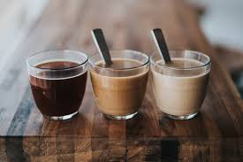
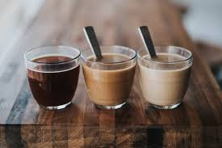

.jpg.aspx?lang=en-GB&width=700&height=466)
STARBUCKS
brand is not known for sourcing and roasting the best coffee beans. Most of their coffee beans are dark roasted, meaning they taste bitter. Many consumers, who know their coffee, complain that Starbucks coffee has a distinct burnt taste.
Drink Coffee, Live Forever !!
A 2017 review of clinical trials found that drinking coffee is generally safe within usual levels of intake and is more likely to improve health outcomes than to cause harm at doses of 3 or 4 cups of coffee daily. Exceptions include possible increased risk in women having bone fractures, and a possible increased risk in pregnant women of fetal loss or decreased birth weight. Results were complicated by poor study quality, and differences in age, gender, health status, and serving size.
Coffee beans are the seeds of a fruit called a coffee cherry. Coffee cherries grow on coffee trees from a genus of plants called Coffea. There are a wide variety of species of coffee plants, ranging from shrubs to trees.
brand is not known for sourcing and roasting the best coffee beans. Most of their coffee beans are dark roasted, meaning they taste bitter. Many consumers, who know their coffee, complain that Starbucks coffee has a distinct burnt taste.
A cappuccino is a hot coffee drink made with layers of espresso, steamed milk, and milk foam. It's known for its balanced flavor and even distribution of coffee and milk.

 
